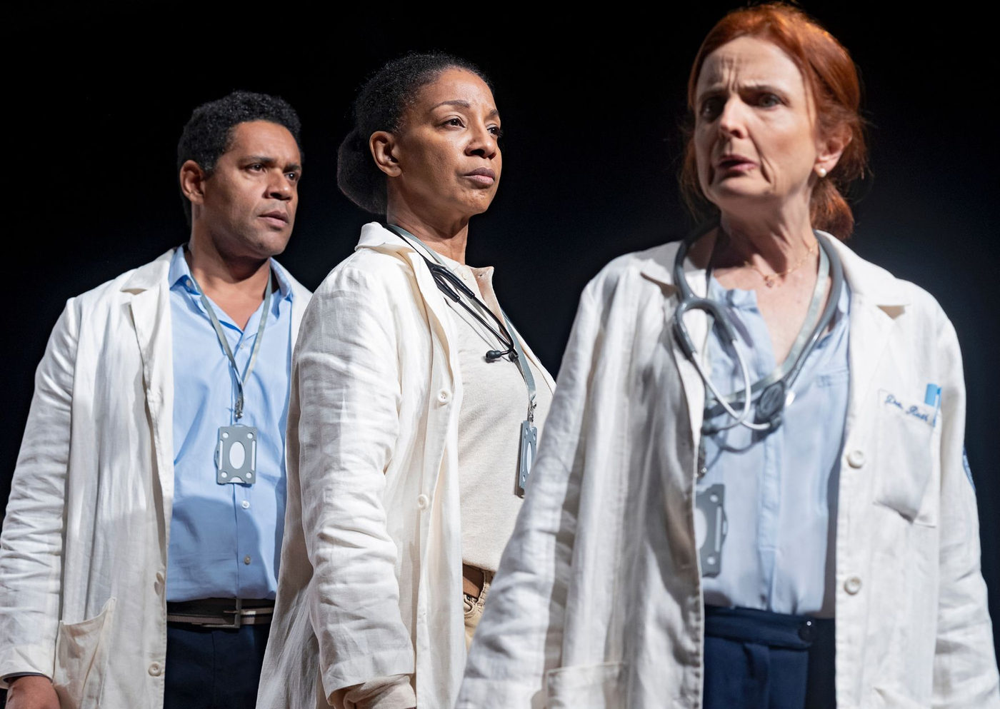

“A Médica”, de Robert Icke, estreia no MASP com Clara Carvalho e direção de Nelson Baskerville

Nova montagem do Círculo de Atores revisita obra clássica com olhar contemporâneo sobre ética, religião e redes sociais
O Auditório do MASP recebe, a partir do dia 20 de junho de 2025, a estreia da peça "A Médica", texto inédito no Brasil do premiado autor britânico Robert Icke, em temporada até 24 de agosto. A montagem conta com direção de Nelson Baskerville, protagonismo de Clara Carvalho e realização da Cia. Círculo de Atores em parceria com a pesquisadora Rosalie Rahal Haddad.
Inspirada na obra Professor Bernhardi (1912), de Arthur Schnitzler, “A Médica” atualiza temas como fé, ciência, ética médica, antissemitismo, racismo e cancelamento digital, com potência dramática e alta carga emocional. A peça teve grande repercussão internacional e já foi encenada em países como Inglaterra, Alemanha, Índia, EUA, Grécia e China.
Um embate moral no centro do palco
Na trama, a Dra. Ruth Wolff, médica judia renomada e diretora de um instituto de pesquisas sobre Alzheimer, se vê no centro de uma crise ética ao impedir a entrada de um padre católico no quarto de uma adolescente prestes a morrer após um aborto mal-sucedido. O objetivo do religioso era aplicar a extrema-unção, mas a médica julga que a presença dele causaria mais ansiedade do que conforto.
O conflito se torna público ao ser gravado e viralizado nas redes sociais, provocando uma reação em cadeia: cancelamentos, ameaças de boicote, repercussão na imprensa e corte de patrocínios. Em meio ao julgamento midiático, a protagonista precisa confrontar seus próprios limites morais.
Clara Carvalho vive a Dra. Ruth Wolff
Indicada ao Prêmio Shell por Hedda Gabler, Clara Carvalho encarna a complexa personagem criada por Icke: “Ela é ao mesmo tempo firme e vulnerável. O texto toca em questões fundamentais como a tensão entre ciência e fé, os perigos da viralização, o papel da mulher em posições de poder e os efeitos de uma sociedade cada vez mais dividida entre polarizações”, comenta a atriz.
O elenco conta ainda com Adriana Lessa, Anderson Müller, Chris Couto, César Mello, Cella Azevedo, Kiko Marques, Luisa Silva, Sergio Mastropasqua, Thalles Cabral e Isabella Lemos. A trilha sonora original de Gregory Slivar é executada ao vivo, e o espetáculo também incorpora videomapping, em um cenário de Marisa Bentivegna, com figurinos de Marichilene Artisevskis e luz de Wagner Freire.
Rosalie Rahal Haddad e a missão de conectar teatro e pensamento
“A Médica” marca a quarta colaboração entre Rosalie Rahal Haddad e o Círculo de Atores, após montagens de obras de Bernard Shaw e Henrik Ibsen. Pesquisadora da USP, Rosalie atua também como ponte entre o teatro brasileiro e instituições internacionais, como o Trinity College Dublin, através da Fundação Haddad.
SERVIÇO – A MÉDICA
📍 Local: Auditório do MASP — Av. Paulista, 1578 – São Paulo – SP
🗓 Temporada: De 20 de junho a 24 de agosto de 2025 (não haverá sessão em 22/06)
🕘 Horários: Sextas e sábados, às 20h | Domingos, às 18h
🎟 Ingressos:
Sextas: R$ 80 (inteira) | R$ 40 (meia)
Sábados e domingos: R$ 100 (inteira) | R$ 50 (meia)
⏱ Duração: 105 minutos
👤 Classificação indicativa: 14 anos
💺 Capacidade: 344 lugares
🎫 Vendas online: Sympla